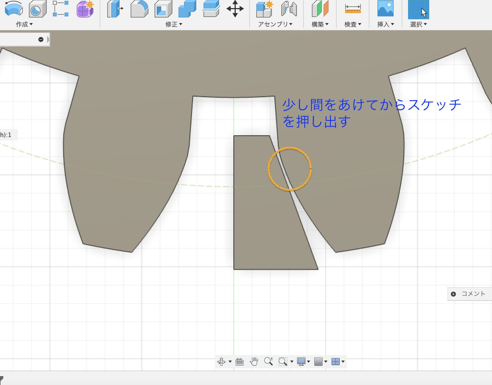
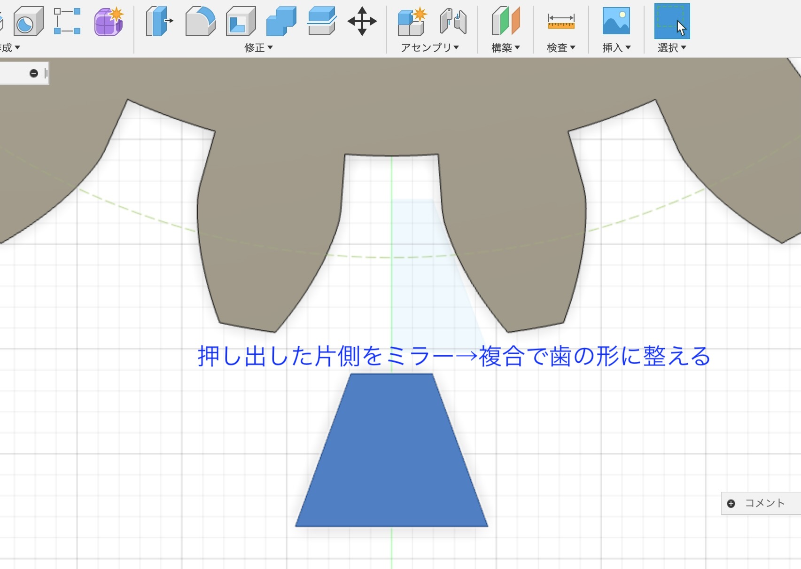

レーザーカッティング 課題
こちらから※(10/15)２班の選んだ形容詞：美しい、可愛い、キモい、懐かしい
メモ
- 製品の機能は人間の能力の延長線上にある
- カッティングプロッター：シール
- レーザー加工器:布、板
- 板でもスリットを入れると曲がる（＝スリットヒンジ）※スリットヒンジのパターンはネットで検索
- 嵌め込み箇所は少し狭めの溝を作る（レーザーカッティング時にレーザー分が少し多く削れてしまう）
- 自分の感覚は他人が感じる感覚と違う→新しい価値観を生み出すヒントに
本能レベルに関するアイデアの出し方
- 感情の形容詞（かっこいい、可愛い…）をできる限りたくさん書き出す
- 各形容詞が想起される物事をそれぞれ書き出す
- 想起した物事から別の形容詞（感情）が想起されないかもう一度見直す
- 異なる形容詞（の物事）から掛け合わせられるものがないか検討する
- Fusion360のスケッチ作成画面でスケッチを作成する
- 該当する「スケッチ」を右クリック→USBにDXFファイルを保存
- ファブラボのパソコンでAdobe Illustratorを開き、DXFファイルを読み込む
- 切断線＝赤 RGB（255,0,0）で線を引き、彫刻面（黒くする）は黒 RGB (0.0.0)で線を引くor塗りつぶす
線の太さは0.001ptにする ※くっついていない線をくっつけるにはShitft+J - ファイル→プリントを選択
- レーザーカッターの電源入れて、専用アプリと同期させる（USBみたいなボタン押す）
素材に合わせてパラメータをアプリで設定する。 - レーザーカッターのヘッドと土台をセッティング
- 出力 「一時停止」は読み込んだデータが終わるまで印刷する、「停止」は完全に停止・終了
- 出力中は目を離さない、出火したら足元の水スプレー（弱）or消火器（強）で消火
- Fusion360 ツール→アドイン→Spur Gearをアドイン
- 「作成」からSpur Gearを選択して設定：参考 モデログ 超簡単！ Fusion 360で歯車を作成する方法（外部サイト）
- ラックギアの作り方：参考 メイカーズラブ【歯車マスターの道】Fusion360でラックギアを作る方法(外部サイト)
レーザーカッター練習
レーザーカッター使用の手順 ※Fusion360使用の場合
その他 メモ
歯車作成スケッチで歯車の歯を作成→あとは歯を等間隔で並べていく



作った歯車の動作確認はこちら（動画）
前の画面に戻る